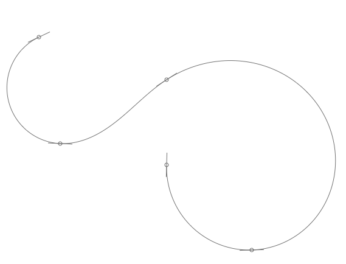

Description
The Cornu library adds Raph Levien’s elegant cornu curves to PlotDevice. Cornu curves (wich are based on the Cornu spiral) are a different approach to curves than Bezier paths, generally requiring less points, no control handles, providing more elegant forms, and looking kinda ‘spiraling’. The library uses Mark Meyer’s algorithm to transform Cornu spirals to Bézier curves.
Download
| cornu.zip (6KB) Last updated for PlotDevice 1.9.5 Author: Raph Levien |
Documentation
How to get the library up and running
Put the cornu library folder in the same folder as your script so PlotDevice can find the library. You can also put it in ~/Library/Application Support/PlotDevice/.
cornu = ximport("cornu")
Working with cornu paths
drawpath(coordinates, close=False, tweaks=20, points=False, flat=False)
The drawpath() command draws a cornu path from a list of (x,y)-tuples. The x and y coordinates range between 0.0 and 1.0, describing a point’s position relative to the drawing area’s size().
When the close parameter is set to True, draws a closed path. The number of tweaks makes the path more elegant, but slows down the command as well. When points is true, draws the path’s control points to the screen. When flat is true, the resulting path will be made up of very small straight line segments (by default the resulting path is made up of Bézier curves).
size(700,700) path = [(0.1,0.1), (0.15,0.35), (0.4, 0.2), (0.6, 0.6), (0.4, 0.4)] nofill() stroke(0) cornu.drawpath(path, tweaks=100, points=True)

The path() command returns a path object from a given list of (x,y)-tuples, instead of drawing the path directly to the screen.
path(coordinates, close=False, tweaks=20, flat=False)
Again, the x and y coordinates in this list range between 0.0 and 1.0, describing a point’s
position relative to the drawing area’s size(). The
points in the returned path object are absolute positions.
See the documentation on paths to see what you can do with path objects.